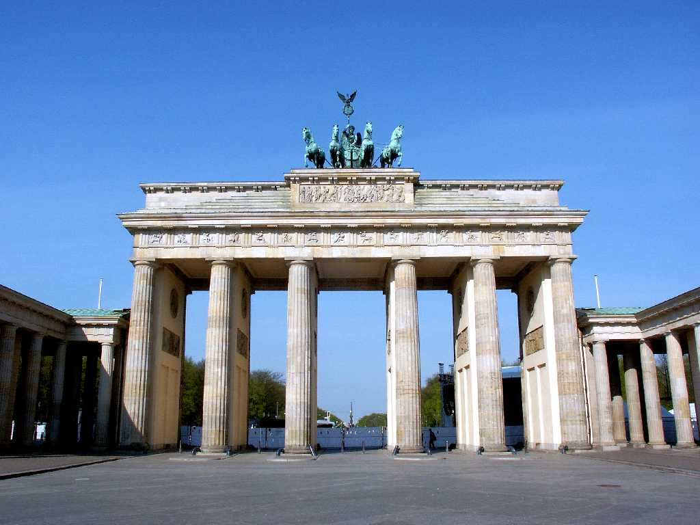
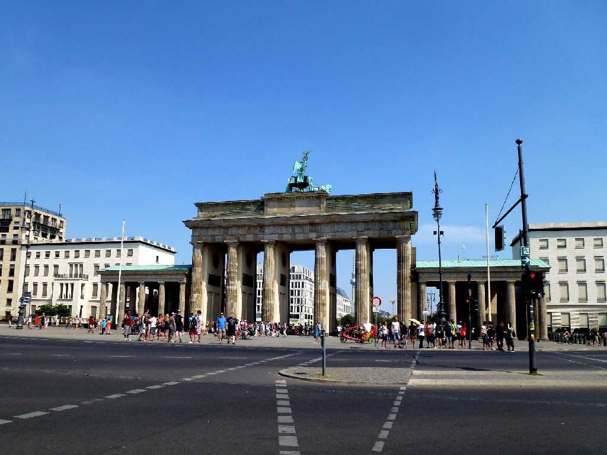
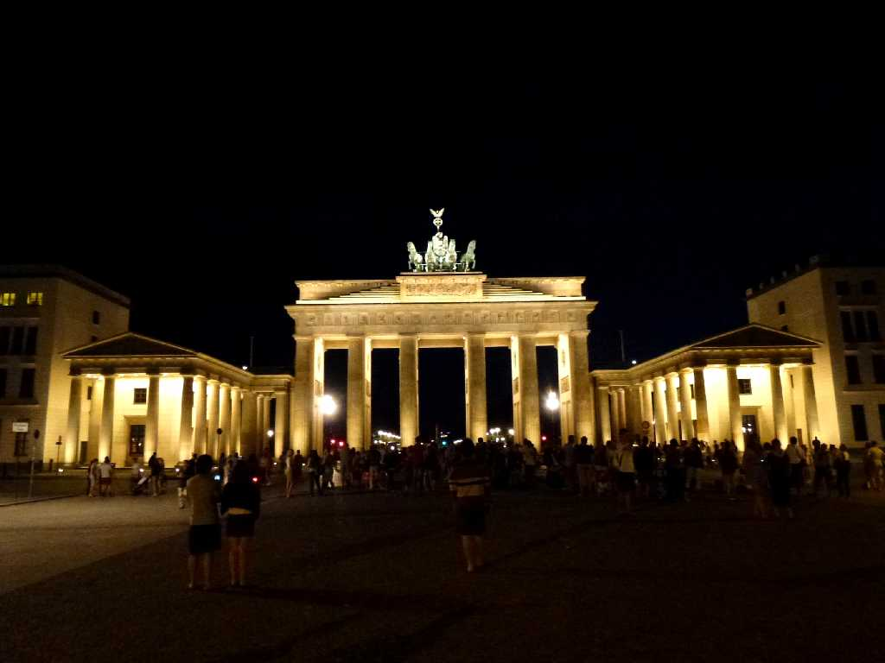
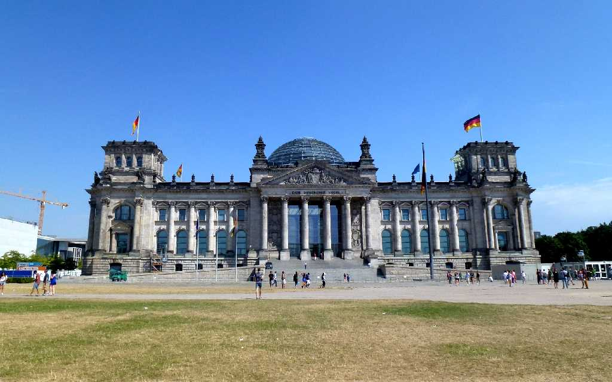
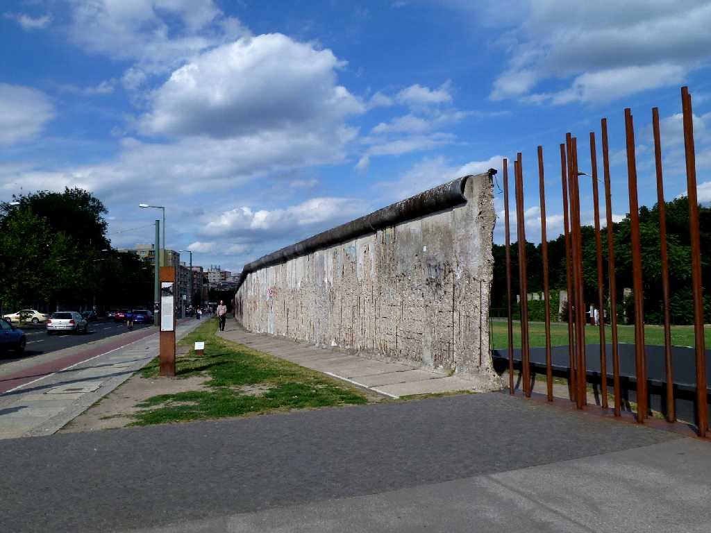
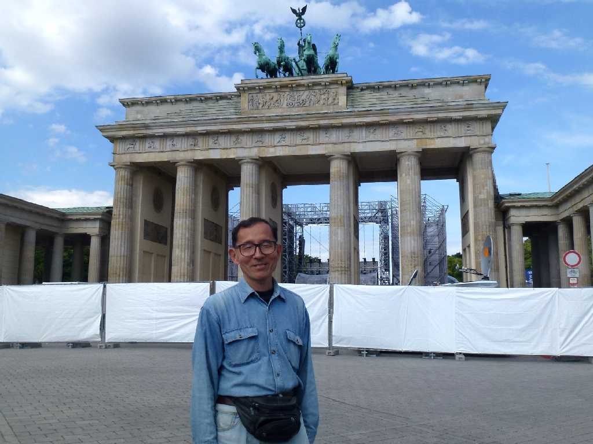

August 1989 Brandenburger Tor Berlin
１９８９年夏に訪れたときは警備が厳しく門の前では立ち止まれませんでした

July 27 2013 Brandenburger Tor
８０日間世界一周鉄道の旅で３４日目 約３０年ぶりのベルリンで初めて西側からブランデンブルク門を望む

Nachtansicht Brandenburger Tor Pariser Platz
東西ドイツ統合後のブランデンブルグ門は夜も賑わっている

Reichstag
東西ドイツ統合後の連邦議会議事堂
Bundeskanzleramt
東西ドイツ統合後の連邦首相府

Gedenkstätte Berliner Mauer
統合前は近づけなかったベルリンの壁の跡

August 1 2013 Berliner Mauer Topographie des Terrors

June 16 2014 Brandenburger Tor
ドイツ周遊５,０００kmバスの旅で１年ぶりのベルリン再訪問 サッカーワールドカップ２０１４で屋外観戦の準備中でしたがまさかドイツが優勝するとは
リューベックから始まった左周りのドイツ周遊５,０００ｋｍバスの旅はここベルリンで終わる